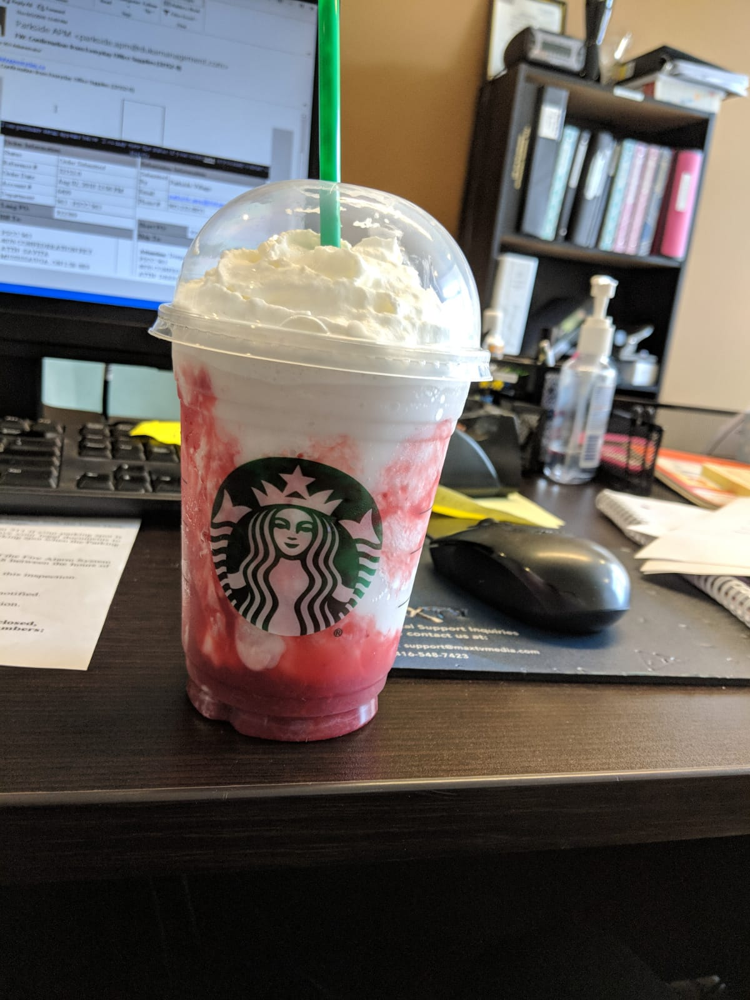
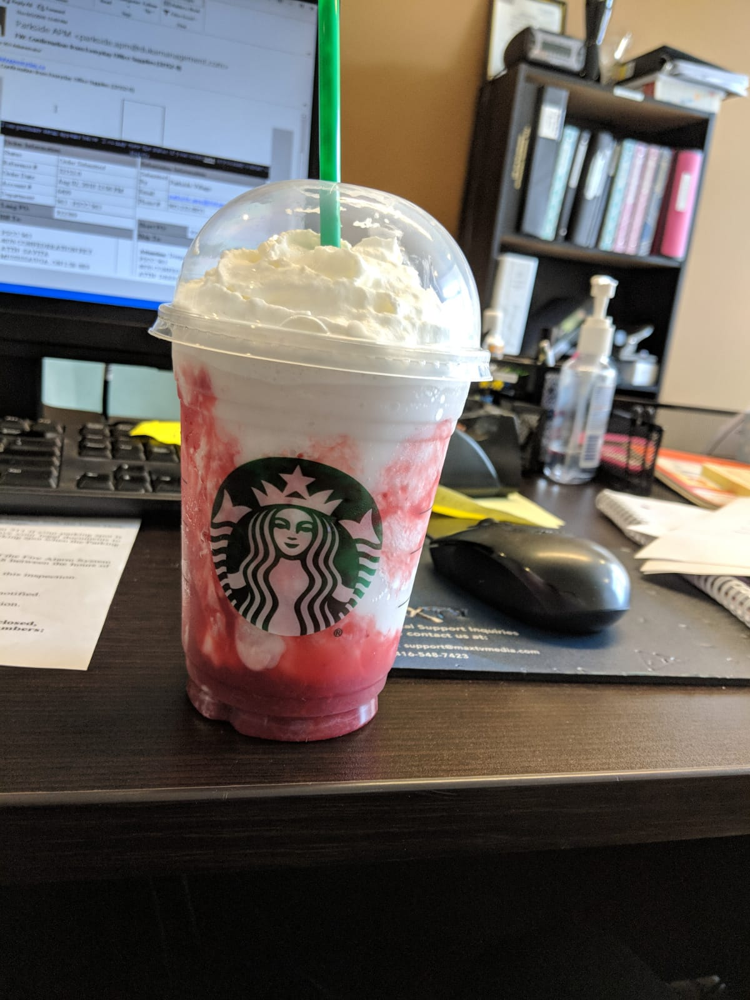

Who exactly am I and what words can describe me? I am adventurous, hard working, fast learner and a compassionate person.
I have a unique curiosity and passion for both food and work. If it’s a new dish on a menu I will try it. If it is a new
method to do my work I will try it. I believe it is this passion that drives my curiosity in being a Full Stack
Web Developer.
I started my adventure for coding in University, taking a few courses sparingly and few courses over the
summers on Udemy. This led me to the opportunity of studying Full-Stack Web Development at University of Toronto
Mississauga by Trilogy. Working on various projects given over the has strengthened my knowledge of both front
and back end development. Group projects were a big part of the course that have also strengthened my skills in
working in live team environments and further led to the development of critical thinking and project implementation.
My work implementation is based on a simple question: what would I like to see as a user? With this simple
question in mind I think about what I can contribute to the team. These simple reflections guide my decisions to
a simple yet thoughtful design.
TECHNICAL SKILLS
What I know...Thus far
HTML5
CSS
BootStrap
Javascript
JQuery
Ajax
Firebase
Node
Education and experience
What have I done...so far
University of Toronto
School of Continuing Education Full-Stack-Flex
2018-Progressing
UOIT
Bachelors of Biological Sciences
2013-2015
Development
Developed applications using a variety of tools in sprint environments
.jpeg)
 



{kind=link}
{kind=link}
{kind=link}
{kind=link}
{kind=link}
{kind=link}